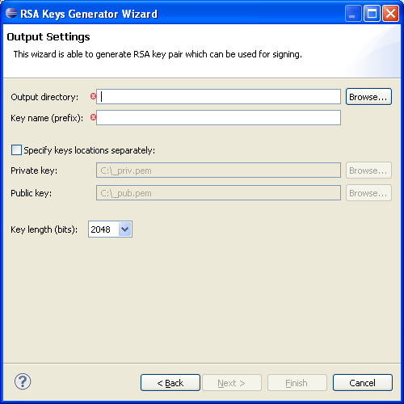

How to generate RSA key pair
Generated RSA key pair can be used for signing.
Instructions
Open the RSA Keys Generator Wizard by completing the following steps:
- In the menu select File -> New > Other... (or press Ctrl+N)
- Expand the Flash Kit category
- Select the RSA Keys Generator and press Next
The following dialog will pop-up and user must set all required fields.

Required fields:
- Output directory: Path where the generated key pair is going to be stored.
- Key name (prefix): Name (prefix) of the generated public and private keys files.
- Key length (bits): Key length in bits.
Locations of the generated public and private keys can be specified separately instead of single output directory.
To finish the wizard select Finish.